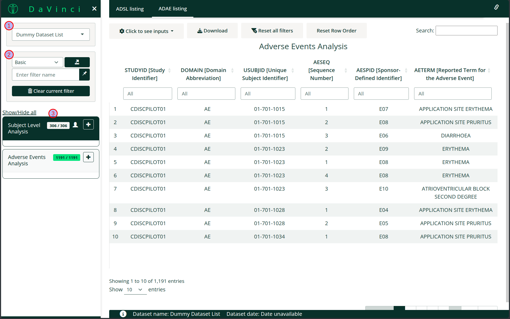
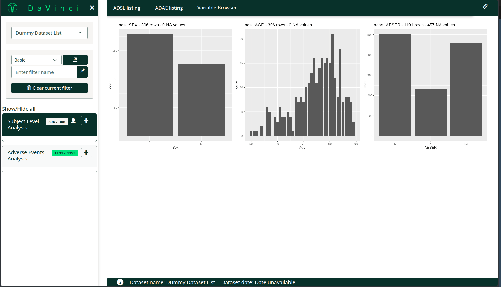
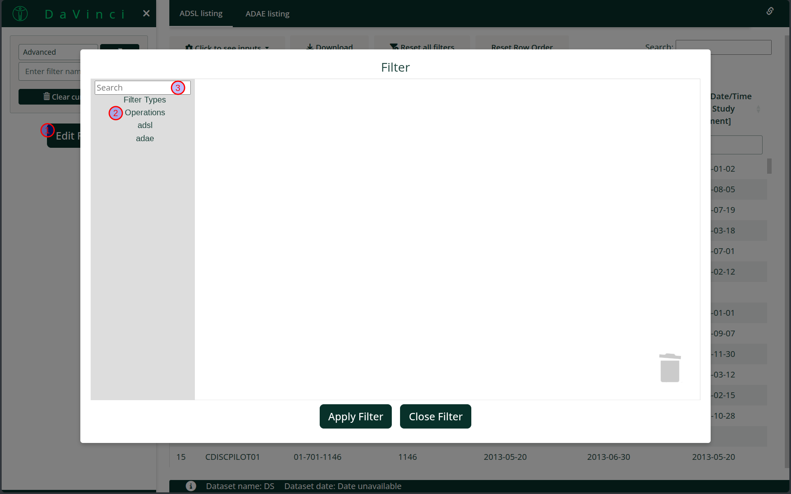
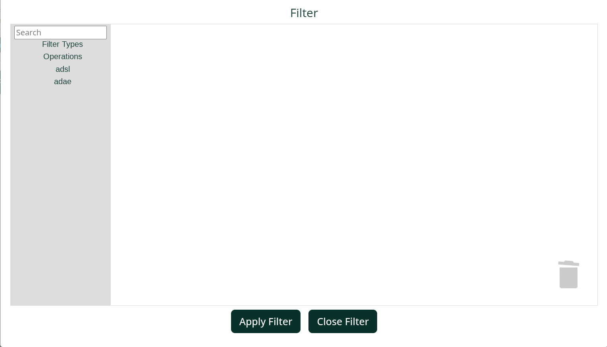
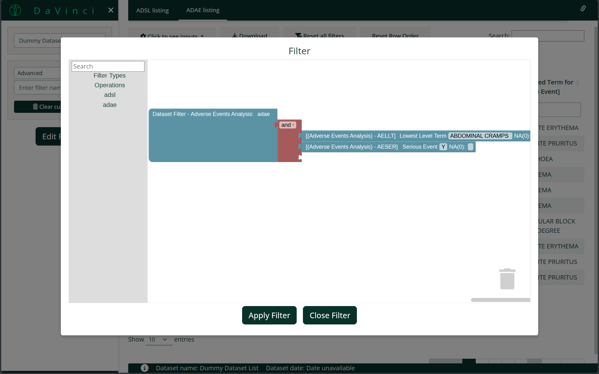
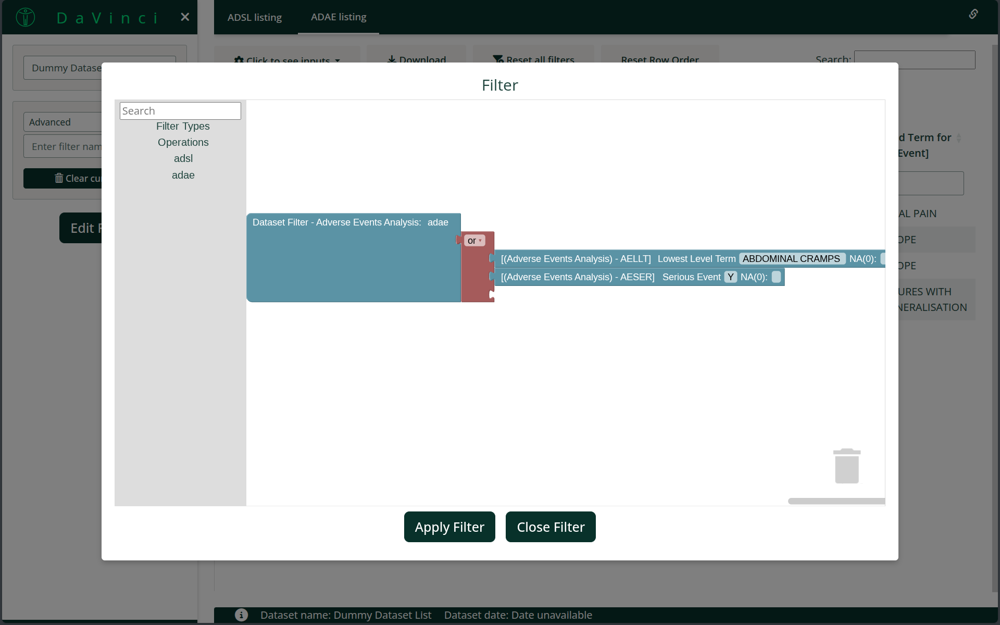
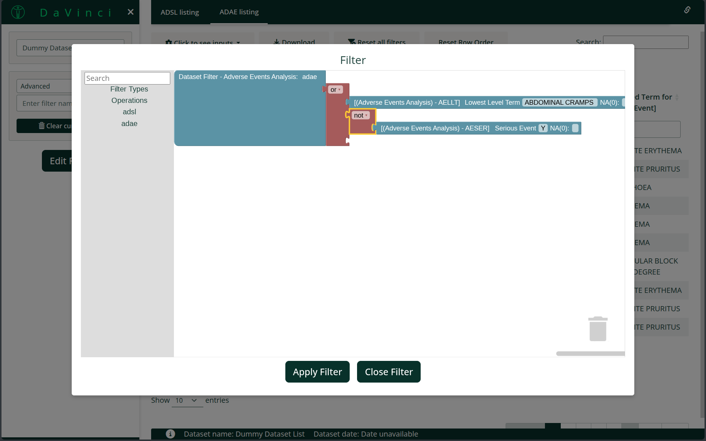
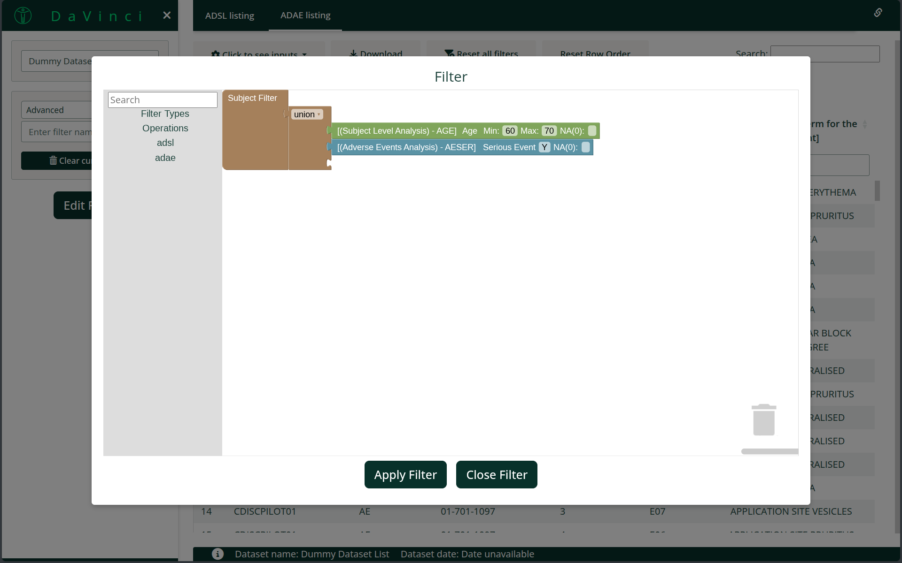
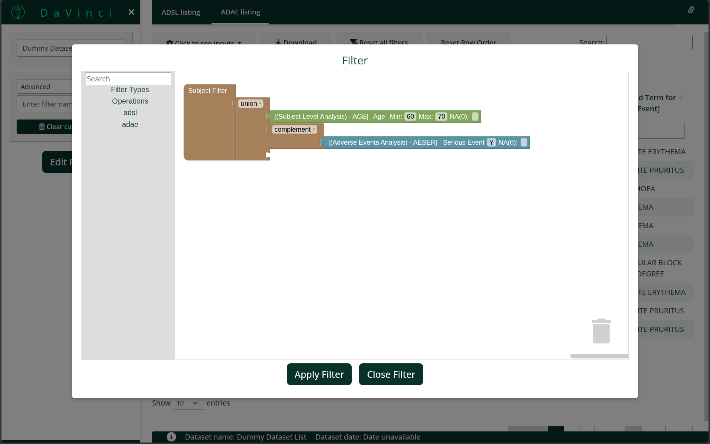

Filter
filter.Rmd
The filter is located in the sidebar, and it is divided in three main zones:
dataset selector that allows switching between datasets in the application.
general filter options and actions
filter body and selectors
This filter has two different interfaces a Basic one and a Advanced one. Both have the same mission, but the latter has a block interface that allows expressing richer filters when required.
Before describing each filter (Basic or Advanced), it is important to understand the two levels at which filters can be applied.
Filtering levels
Basic filter
The interface displays one filter box per dataset. Inside each box, you can add filters for the variables available in that dataset.
For each variable filter, you can:
Select a set/range of values from the variable
Choose whether to include or exclude missing (NA) values
One dataset is always marked with a silhouette icon, showing it is being used as the subpopulation filter. The remaining datasets act as dataset filters.
Each dataset header also shows the number of rows included after the filters are applied.
See below an example of the usage of the filter:
Apply a subpopulation filter to select female participants aged 60 to 70 years. Notice how this filter also applies to the
adaedataset.Apply a dataset filter to the
adaedataset to include only Serious Adverse Events.Exclude Serious Adverse Events coded as NA.
Click on the image for a bigger version

Notice filters can be collapsed by clicking the dataset name.
Note:
Datasets can be assigned a human readable label by adding an attribute
label to the datasets inside a dataset_list.
Saving/Restoring states, clearing all filters and exporting the current state to a file
As shown in the example, you can save a filter state and restore it later. You can also clear all filters or export the current filter state to a file. The exported file can then be reused in the application as a preset filter.
dv.manager::run_app(
...,
filter_default_state = "path/to/filter/file.json"
)Now let’s switch to the Advanced filter. To switch between filter types, use the dropdown menu in the top section (marked as 1). When you change the filter type, the current state of the filter is preserved.
Advanced Filter

In this interface, you will notice there are no filters on the left side. Instead, you will see a Show Filter button (1).
Clicking this button opens the filter modal, where you can design your filter.
The Advanced filter works as follows:
Select blocks from the categories (2), or search for them using the search box (3).
Drag the blocks into the canvas (4) and connect them to build your filter.
Once your filter is created, click Apply filter (5). Unlike the basic filter, advanced filters are not applied automatically — you must apply them explicitly.
Description of pieces
Filter Type Pieces
All filters start with one of the pieces under the Filter
Types section, placed at the root of the filter. Only one of
each type can be present in the canvas at any given time — for example,
one describing the filtering for the adae dataset, another
for the adlb dataset, and so on.
The same concepts of Subject filter and Dataset filter applies in this filter. Each filtering concept corresponds to a specific piece type:
The Subject filter piece, which applies across all datasets
A Dataset filter piece for each individual dataset
Variable Pieces
In the toolbox, each dataset has its own section. Under each section you will find a piece for every variable in that dataset. Drag these pieces into the canvas to create filters.

In the animation above, a basic filter is created for the
adae dataset to include only rows where the Lowest
Level Term is ABDOMINAL CRAMPS.
To build more complex filters, you can use the combination operations available in the Operations toolbox section.
Operation Pieces
Operation pieces are divided into two groups:
Pieces used to combine variable pieces
Pieces used to combine sets
Combining Variable participantsieces
The and, or, and not operations combine variable pieces from the same dataset. These are purple-colored and located in the Operations section of the toolbox.
For example, you can create filters on the adae dataset
such as:
Lowest Level Term is ABDOMINAL CRAMPS and Severity is SEVERE

Lowest Level Term is ABDOMINAL CRAMPS or the Severity is SEVERE

Lowest Level Term is ABDOMINAL CRAMPS or the Severity is not SEVERE

There is no single way to express a filter — the same logic may be built with different variable selections or combinations of operations.
Combining Sets
The union, intersect, and complement operations (see set operations) combine sets to select a subpopulation across the entire application. These are green-colored and can also be found in the Operations section of the toolbox.
For example:
All Female subjects aged between 60 and 70 intersect with all subjects who experienced any adverse event with Severity SEVERE.

All Female subjects aged between 60 and 70 union all subjects who experienced any adverse event with Severity SEVERE.

All Female subjects aged between 60 and 70 union with the complement of all subjects who experienced any adverse event with Severity SEVERE.

Piece Restrictions
Several restrictions prevent incorrect configurations of the filter:
- Variable and Combining variable pieces can have any parent.
- Combining variable pieces can only have children that are either a combining variable piece or a variable piece.
- All variable pieces under a given combining variable piece (regardless of depth) must belong to the same dataset.
- Combining set pieces can only have a parent that is either another combining set piece or the Subject Filter piece.
- Combining set pieces can have any type of piece as children.
The application enforces these rules and prevents invalid configurations.
Example application
Below is an example application that allows testing the Advanced filter:
# Note ::: is used as several of the functions are not exported yet
# until a final version of the filter is provided
dv.manager::run_app(
data = list(
"D0" = list(
adsl = dv.manager:::get_pharmaverse_data("adsl"),
adae = dv.manager:::get_pharmaverse_data("adae")
),
"D2" = list(
adsl = dv.manager:::get_pharmaverse_data("adsl"),
adae = dv.manager:::get_pharmaverse_data("adae")
)
),
module_list = list(
"Listing" = dv.listings::mod_listings("mod_listing", c("adsl", "adae"))
),
filter_data = "adsl",
filter_key = "USUBJID"
)Known issues and FAQ
- Is bookmarking supported?
- Yes.
- One of the “AND”/“OR” pieces has no connections, what should I do?
- Delete the piece and drag a new one into the canvas.
- The search box does not work?
- You must enter at least three characters before the search will start.
- I applied the filter, but no filtering occurs.
- Check for unconnected pieces. Any piece that is not connected prevents the filter from being applied.
- A selection for a categorical variable is not applied correctly.
- Ensure that the category dropdown menu is closed after selecting the values.